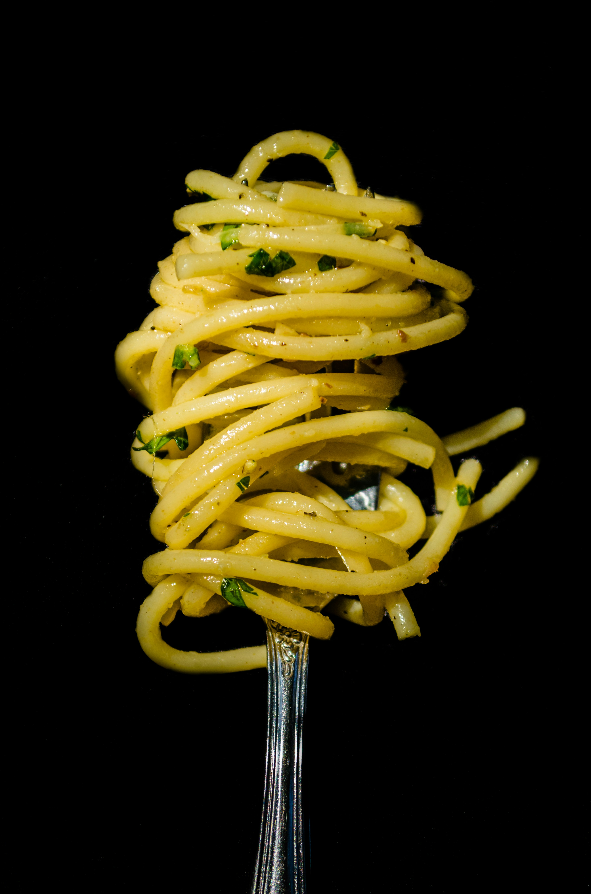

Aglio Olio

No two aglio e olio recipes are alike, but this one is pretty
true to the classic method. The key is slowly toasting the garlic
slices to a perfect golden brown in the olive oil. If it's too
light, you don't get the full flavor and if it's too dark it gets bitter
My advice? Do it perfectly!
Ingredients:
- 80-100g of spaghetti
- 50-100ml of extra-virgin olive oil
- 2-3 cloves of garlic
- chilli flakes
- parsley
- lemon (optional)
How to prepare:
- Bring a pot of salted water to a boil and add the spaghetti
- While the pasta is cooking chop the garlic
- In a cold skillet, combine the chopped garlic with olive oil
- Cook over medium heat to slowly toast garlic until golden brown and take it of the heat
- Add the pasta to the skillet and season it with chilli flakes and parsley (and lemon if you'd like)
- Add a bit of pasta water and continue to stir
- Serve, eat and enjoy!